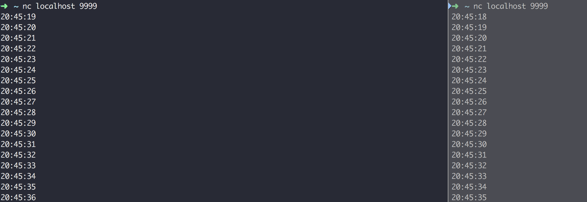

Don’t communicate by sharing memory; share memory by communicating.
并发编程表现为由若干个自主的的活动单元组成，他从来没有像今天这么重要。web服务器一次可以处理数千个请求。平板电脑和收集应用在渲染用户界面的同时，后端还同步进行着计算和处理网络请求。甚至传统的批处理任务——读取数据，计算，将结果输出，也使用并发来隐藏I/O操作的延迟，充分利用现代的多核计算机，内核的个数每年变多，但是速度没什么变化。
Go有两种并发编程的风格，一种是goroutine和通道，他们支持通信顺序进程（Communicating Sequential Process, CSP），CSP是一个并发的模式，在不同的执行体（goroutine）之间传递值，但是变量本身局限于单一的执行体，还有一种传统的共享内存多线程模型。
goroutine
在go中，每一个并发执行的活动称为goroutine。考虑这样一个程序，他有两个函数，一个做一些计算工作，另一个将结果输出，假设他们不相互调用。顺序程序可能调用一个函数，然后再调用另一个，但是在有两个或多个goroutine的并发程序中，两个函数可以同时调用；使用过操作系统或者其他语言的中的线程的话，可以假设goroutine类似于线程，然后写出正确的程序，但是goroutine和线程之间在数量上有非常大的差别。
当一个程序启动的时候，只有一个goroutine来调用main函数，称他为主goroutine，新的goroutine通过go语句进行创建。语法上，一个go语句是在普通的函数或者方法调用前加上go关键字前缀。go语句使得函数在一个新创建的goroutine中调用。go语句本身的执行力及完成：
1 | f() // 调用f();等待他返回 |
下面的例子中，主goroutine计算第45个斐波那契数。因为它使用非常低效的递归计算发，所以他需要大量时间来执行，在此期间我们提供一个可见的提示， 显示一个字符串 “spinner” 来指示程序依然在运行。
1 | package main |
在fib函数执行完之后，main函数返回，当他发生时，所有的 goroutine 都暴力地直接终结，然后程序退出。除了从main返回或者退出之外，没有程序化的方法让一个 goroutine 来停止另一个，但是后面我们即将看到，有办法和 goroutine 通信来要求它停止自己。
实现一个并发始终服务器，让服务器定时向客户端发送当前时间，程序如下：
1 | package main |
同时打开两个终端，连接端口，将看到下面的结果：

细说 goroutine
看过前面的文章，我们已经知道，通道（也就是 channel）类型的值可以被用来以通讯的方式共享数据。更具体地说，它一般用来在不同的 goroutine 之间传递数据，那么 goroutine 到底代表着什么呢？
简单来说， goroutine 代表着并发编程模型中的用户级线程。我们已经知道，操作系统提供了进程和线程这两种并发执行程序的工具。进程，描述的是程序执行的过程，是运行着的程序的代表。换句话说，一个进程既是某个程序运行时的一个产物。如果说代码既是程序的话，那么运行着，正在发挥功能的代码就可以成为进程。再来说说线程，线程总是在进程之内的，它可以被视为进程中运行着的控制流（或者说代码的执行流程）。一个进程至少会包含一个线程，如果一个进程只包含了一个线程，那么它里面所有的代码都会被串行地执行。每个进程的第一个线程都会随着该进程的启动二被创建，它们可以被称为其所属进程的主线程。相对应地，如果一个进程中包含了多个线程，那么其中的代码就可以被并发地执行。除了进程的第一个线程之外，其他的线程都是由进程中已存在的线程创建出来的。也就是说，主线程之外的其他线程都只能由其他代码显示地创建和销毁。这需要我们在编写程序的时候手动控制，操作系统以及进程本身本身不会帮我下达这样的指令，他们只会忠实地执行我们的指令。
但是，在Go语言中，Go 语言的运行时系统会帮助我们自动地创建和销毁系统级的线程，这里的系统级线程指的就是我们刚刚说过的操作系统提供的线程。而对应的用户级线程指的是架设在系统线程之上的，由用户完全控制的代码执行流程。用户级线程的创建，销毁，调度和状态变更以及其中的代码和数据都完全需要我们的程序自己去处理。这带来了很多优势，比如，因为它们的创建和销毁并不用通过操作系统去做，所以速度会很快，又比如，由于不用等着操作系统去调度它们的运行，所以往往会很容易控制并且可以很灵活。然而，劣势也是有的，最明显也最重要的一个劣势就是复杂。如果我们只使用了系统级线程，那么我们只要指明需要新线程执行的代码片段，并且下达创建或销毁线程的指令就好了，其他的一切具体实现都会由操作系统代劳。操作系统不但不会帮忙，还会要求我们的具体实现必须与它正确地对接，否则用户级线程就无法被并发地，甚至正确地运行。毕竟我们编写的所有代码最终都需要通过操作系统才能在计算机上执行。这听起来就很麻烦，不过别担心，Go 语言不但有着独特的并发编程模型，以及用户级线程 goroutine，还拥有强大的用于调度 goroutine、对接系统级线程的调度器。
这个调度器是 Go 语言运行时系统的重要组成部分，它主要负责统筹调配 Go 并发编程模型中的三个主要元素，即：G（goroutine 的缩写）、P（processor 的缩写）和 M（machine 的缩写）。其中的 M 指代的就是系统级线程。而 P 指的是一种可以承载若干个 G，且能够使这些 G 适时地与 M 进行对接，并得到真正运行的中介。从宏观上说，G 和 M 由于 P 的存在可以呈现出多对多的关系。当一个正在与某个 M 对接并运行着的 G，需要因某个事件（比如等待 I/O 或锁的解除）而暂停运行的时候，调度器总会及时地发现，并把这个 G 与那个 M 分离开，以释放计算资源供那些等待运行的 G 使用。而当一个 G 需要恢复运行的时候，调度器又会尽快地为它寻找空闲的计算资源（包括 M）并安排运行。另外，当 M 不够用时，调度器会帮我们向操作系统申请新的系统级线程，而当某个 M 已无用时，调度器又会负责把它及时地销毁掉。正因为调度器帮助我们做了很多事，所以我们的 Go 程序才总是能高效地利用操作系统和计算机资源。程序中的所有 goroutine 也都会被充分地调度，其中的代码也都会被并发地运行，即使这样的 goroutine 有数以十万计，也仍然可以如此。
主 goroutine
与一个进程总会有一个主线程类似，每一个独立的 Go 程序在运行时也总会有一个主 goroutine。这个主 goroutine 会在 Go 程序的运行准备工作完成后被自动地启用，并不需要我们做任何手动的操作。每条 go 语句一般都会携带一个函数调用，这个被调用的哈数通常被称为 go 函数，而主 goroutine 的 go 函数就是那个作为程序入口的 main 函数。一定要注意，go 函数真正被执行的时间总会与其所属的 go 语句被执行的时间不同。当程序执行到一条 go 语句的时候，Go 语言的运行时系统，会先试图从某个存放空闲的 G 的队列中获取一个 G（也就是 goroutine），它只有在找不到空闲 G 的情况下才会去创建一个新的 G。这也是为什么我总会说 “启用” 一个 goroutine 而不说 “创建” 一个 goroutine 的原因，已存在的 goroutine 总是会被优先复用。然而，创建 G 的成本也是非常低的。创建一个 G 并不会像新建一个进程或者一个系统级线程那样，必须通过操作系统的系统调用来完成，在 Go 语言的运行时系统内部就可以完全做到了，更何况一个 G 仅相当于为需要并发执行代码片段服务的上下文环境而已。在拿到了一个空闲的 G 之后，Go 语言运行时系统会用这个 G 去包装当前的那个 go 函数（或者说该函数中的那些代码），然后再把这个 G 追加到某个存放可运行的 G 的队列中。这类队列中的 G 总是会按照先入先出的顺序，很快地由运行时系统内部的调度器安排运行。虽然这会很快，但是由于上面所说的那些准备工作还是不可避免的，所以耗时还是存在的。因此，go 函数的执行时间总是会明显滞后于它所属的 go 语句的执行时间。当然了，这里所说的 “明显滞后” 是对于计算机的 CPU 时钟和 Go 程序来说的，我们在大多数时候都不会有明显的感觉。一旦主 goroutine 中的代码（也就是 main 函数中的那些代码）执行完毕，当前的 Go 程序就会结束运行。如此一来，如果在 Go 程序结束的那一刻，还有 goroutine 未得到运行机会，那么它们就真的没有运行机会了，它们中的代码也就不会被执行了。
到这里，我们看一段程序，猜一下它的输出什么？
1 | package main |
这道题的答案就在上面这段话中，相信你会找到明白的，答案是：不会有任何输出。
不会有任何输出的原因是因为 主 goroutine 结束的时候，其他goroutine还未获得运行机会，并没有执行，那么让它有输出呢？
1 | package main |
这样修改之后，代码是有输出了，但是多次执行之后，发现执行结果是不确定的，因为这个 goroutine 的执行顺序是由go 的运行时系统调度控制的。那么如何才能让它依次从0到9依次打印呢？
1 | package main |